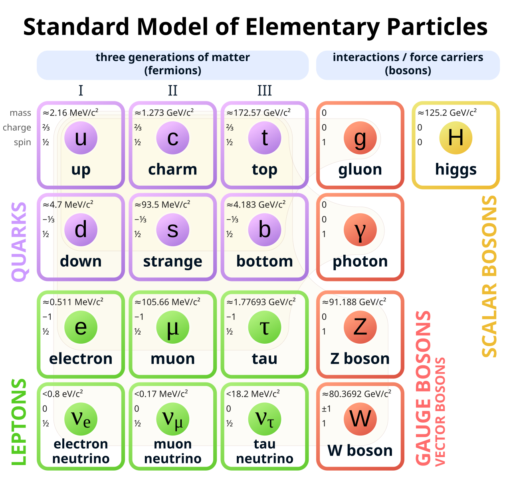

A boson is a subatomic particle with integer spin (0, 1, or 2) that obeys Bose-Einstein statistics, allowing any number of identical bosons to occupy the same quantum state simultaneously. Bosons form one of the two fundamental classes of particles in quantum mechanics, the other being fermions, which carry half-integer spin and are subject to the Pauli exclusion principle. Because bosons are not constrained by the Pauli exclusion principle, they may accumulate in arbitrarily large numbers in a single quantum state — a property that underpins phenomena ranging from laser light to superfluidity.

MissMJ / Wikimedia Commons (CC BY 3.0)
{kind=link}
Elementary bosons. The Standard Model of particle physics includes five elementary bosons. The photon (γ, spin 1, massless) mediates the electromagnetic force and constitutes all electromagnetic radiation, from radio waves to gamma rays. Eight gluon species (spin 1, massless) carry the strong nuclear force, binding quarks inside hadrons. The W± bosons (spin 1, mass ≈80.4 GeV) and the Z0 boson (spin 1, ≈91.2 GeV) mediate the weak nuclear force, responsible for radioactive decay. The Higgs boson (H0, spin 0, 125.09 GeV) is distinct in function: rather than mediating a force, it couples to other particles and generates their mass via the Higgs mechanism. Its existence was confirmed at CERN on 4 July 2012 using data from proton–proton collisions at the Large Hadron Collider.
Composite bosons. Particles composed of an even number of fermions can also behave as bosons. Mesons — bound states of a quark–antiquark pair — are composite bosons, as is helium-4, whose nucleus contains two protons and two neutrons. Cooper pairs, pairs of electrons coupled through lattice vibrations in a superconductor, likewise behave as bosons and are responsible for superconductivity.
Bose-Einstein condensation. At sufficiently low temperatures, a macroscopic fraction of bosons can condense into the single lowest-energy quantum state, forming a Bose-Einstein condensate (BEC). This state of matter was first realised experimentally in 1995 at JILA, where rubidium-87 atoms were cooled below 170 nanokelvin. The achievement was recognised with the Nobel Prize in Physics in 2001.
History and nomenclature. Bosons are named after the Indian physicist Satyendra Nath Bose, who in 1924 derived Planck's black-body radiation law from statistical principles without invoking classical physics. Albert Einstein extended Bose's framework to material particles, producing the theory now known as Bose-Einstein statistics. The term "boson" was later coined by Paul Dirac.
Astronomical relevance. Photons are the carriers of all electromagnetic information received from astrophysical sources, including light from stars, the cosmic microwave background, and radiation associated with the Big Bang. The graviton, a hypothetical spin-2 boson that would mediate gravity, has not yet been detected; however, indirect evidence for gravitational waves — consistent with a massless spin-2 mediator — has been obtained by ground-based detectors such as LIGO, including from merging neutron stars. Whether bosonic dark matter candidates, such as axions or ultralight scalar fields, contribute to the matter content of the universe remains an open question.